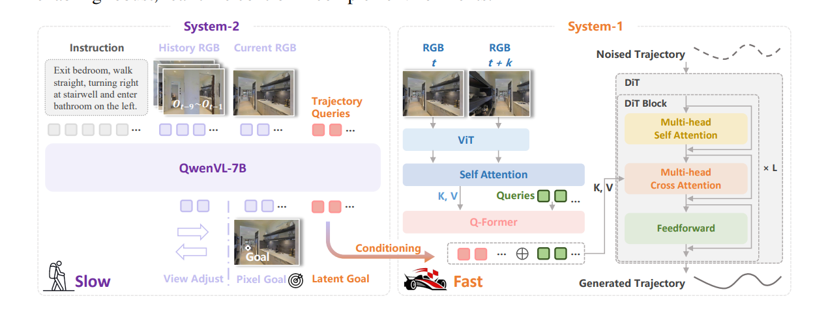
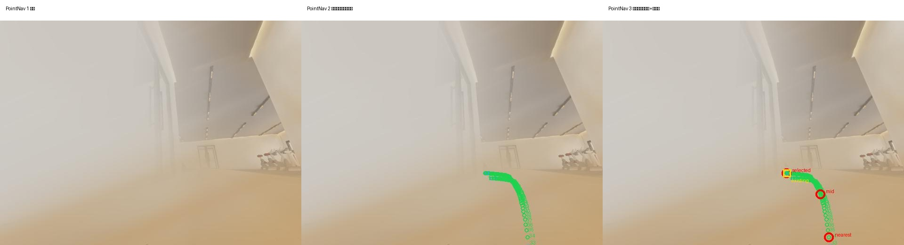
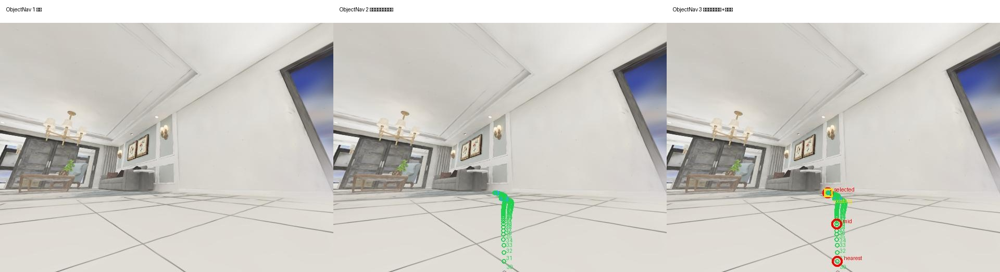
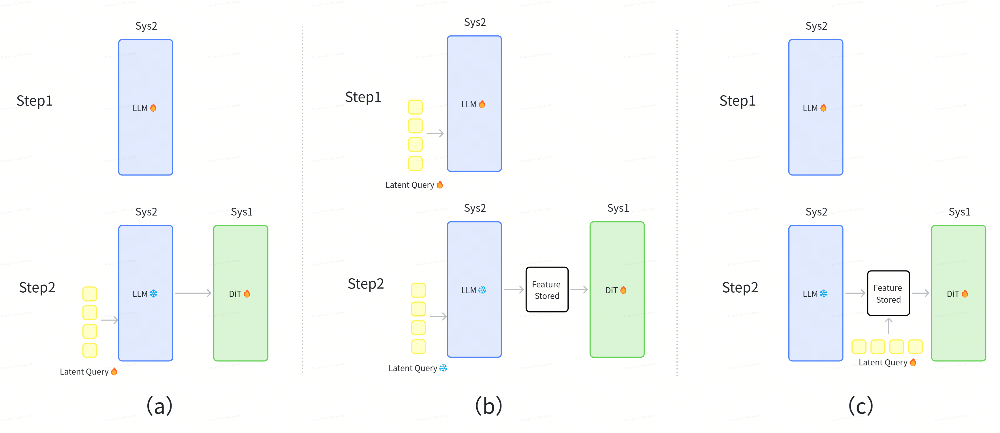
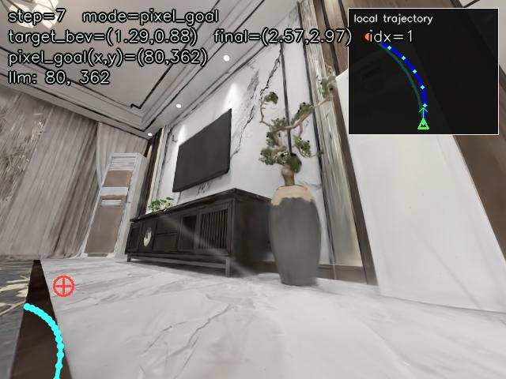
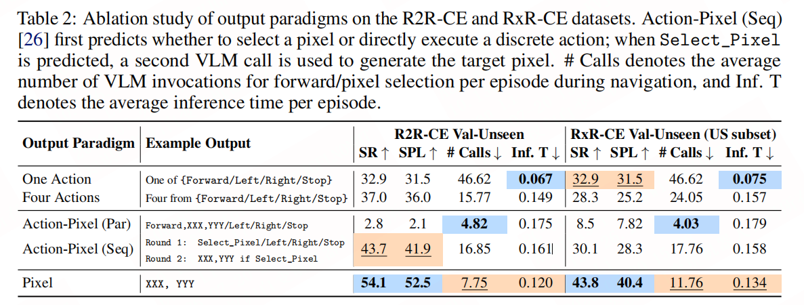

任务泛化
传统栈擅长已知坐标上的确定性规划，却难以统一理解“去最近的椅子”“穿过走廊后左转”等不同目标形式。
一个面向多任务、跨本体的具身导航底座。上层 Agent 负责任务拆分，DualNav 统一承接点导航、物体导航、指令跟随、任务跟随与通道导航。
而是每换一种任务、环境或机器人，都要重新定义接口与能力边界。
传统栈擅长已知坐标上的确定性规划，却难以统一理解“去最近的椅子”“穿过走廊后左转”等不同目标形式。
目标不在视野内时，导航不再只是路径搜索，而需要结合历史观察推断“应该去哪里找”。
直接预测离散动作或控制量会绑定机器人运动学；视觉空间中的 Pixel Goal 更接近本体无关的中间语言。
只使用相机完成语义理解与导航决策，减少地图、激光与精密标定带来的部署成本。
语义推理需要看得远、想得慢；运动执行需要反应快、轨迹稳。解耦规划与执行，才同时保留两者。
融合指令、历史与当前视觉，判断目标方位与探索方向。
条件化生成多模态连续轨迹，处理局部避障与本体动力学。

不是让模型凭空学习坐标系，而是把空间、优先级和历史明确写进任务。
VLM 在海量图像上预训练，对像素方位的理解天然强于机器人坐标与控制量。显式指定 640×480 坐标系，减少空间表示的学习负担。
[PointNav] ... Return exactly one pixel goal (u, v).
Prefer FORWARD ... farthest navigable pixel.
(0,240) TURN LEFT · (639,240) TURN RIGHT · (320,479) STOPPrompt 明确动作优先级：局部目标可见时，选择沿目标方向最远的可行走像素；目标在视野外才输出转向哨兵点。这一约束直接抑制原地打转与左右摆动。
输入由指令、8 帧历史观察、当前头部图与底盘图组成。头部相机覆盖高处物体；底盘相机拥有更大的近场视野，能看到障碍与可行走区域，因此用其坐标输出 (u, v)。
无需人工逐帧点击。利用位姿、深度和未来轨迹，把行为数据自动变成监督信号。


把 latent queries 提前到 System-2 阶段学习，并离线缓存其输出，使 DiT 可以独立、快速迭代。
几十亿参数反复前向；latent queries 到阶段 2 才与 DiT 一起学习，两个系统强绑定。
44 hlatent queries 与 VLM backbone 协同学习；System-1 直接加载缓存特征，独立训练与强化。
4.8 h 8.3× faster
显式、可解释，但二维坐标的信息容量有限，无法携带路径语义和环境上下文。
System-1 只能被动消费固定特征，无法主动选择应该从 VLM 读取什么。
像素提供强监督与可解释锚点；可学习 query 建立自适应、高容量的信息通路。
从打转、碰撞到物体漏检，每类错误都对应一项可验证的系统改动。
对生成轨迹做 Bezier 曲线优化，减少不连续拐点与局部外凸。

检测到物体后结合深度转成世界坐标保存；再次检测时更新 memory，并转换到当前坐标系作为强历史提示。
小基座显著提升训练迭代速度，同时保留多模态理解能力。
Habitat 验证跨数据集泛化；NavArena 额外检验真实 footprint、碰撞与长时执行。
System-2 预测 Pixel Goal，System-1 生成连续轨迹，并通过 Bezier 后处理；在 0.70 × 0.60 m 矩形 footprint、stop distance 0.8 m 设置下完成 97 / 100。
评测快照：2026-08-14 · 长度均衡 · collision-free 汇总Footprint 会显著改变难度，因此圆形与矩形设置不做直接优劣归因；本页同时保留 NE、CR 与步数，避免只用 SR 描述系统。
| 设置 | 数据 | R2R Success | R2R SPL | R2R NE↓ | RxR Success | RxR SPL | RxR NE↓ |
|---|---|---|---|---|---|---|---|
| InternVLA | VLN-CE 100% | 79.43 / 62.81 | 72.75 / 62.81 | 2.54 / 4.16 | 68.59 / 59.55 | 58.24 / 50.11 | 3.99 / 4.73 |
| LoRA r16 | VLN-CE 15% | — / 59.25 | 59.59 / 66.01 | 4.87 / 4.39 | 41.67 / 39.31 | 40.63 / 37.87 | 7.56 / 8.40 |
| LoRA r16 | VLN-CE + 15K | 60.45 / 69.0 | 60.23 / 68.6 | 4.66 / 4.19 | 52.1 / 51.9 | 50.0 / 50.0 | 6.71 / 6.05 |
| LoRA r32 | VLN-CE + 15K | 64.9 / 70.74 | 64.6 / 69.8 | 4.54 / 4.08 | 53.21 / 55.0 | 50.5 / 52.4 | 6.72 / 5.82 |

每个案例只回答一个问题：能否理解方向、完成长距离导航，以及失败在哪里。
没有机械跟随参考路径，但能理解目标点方位并重新找到目标。
在更长的时序中持续更新局部目标，最终到达。
真实机器人在桌椅环境中的视觉导航。
真机失败案例：观察转向先验不足时的振荡行为。
连续障碍场景下保持行进与避障。
面向家居物体的目标导航。
语义目标识别与接近。
动态目标跟随与路径调整。
保留失败样本，观察恢复策略。
小型物体的视觉导航。
室内大物体目标导航。
狭窄通道中的出口判断与碰撞案例。
近距离障碍物处理案例。
复杂室内布局中的语义导航。
目标可见时沿最远可行走点前进。
门口场景中的失败轨迹记录。
办公室场景中绕过障碍并进入会议室。
接近会议室过程中的视觉导航与转向。
办公室 L 型通道中的局部避障测试。
连续障碍下保持路线判断并完成 U 型通行。
办公室常见物体构成的组合障碍测试。
直行走廊中的连续障碍识别与避让。
从办公室直行穿越障碍并抵达会议室。